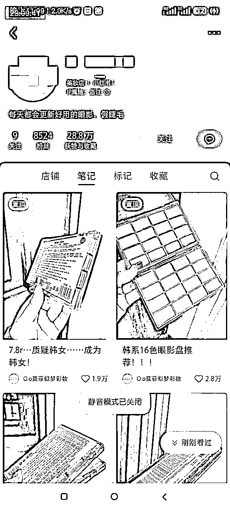
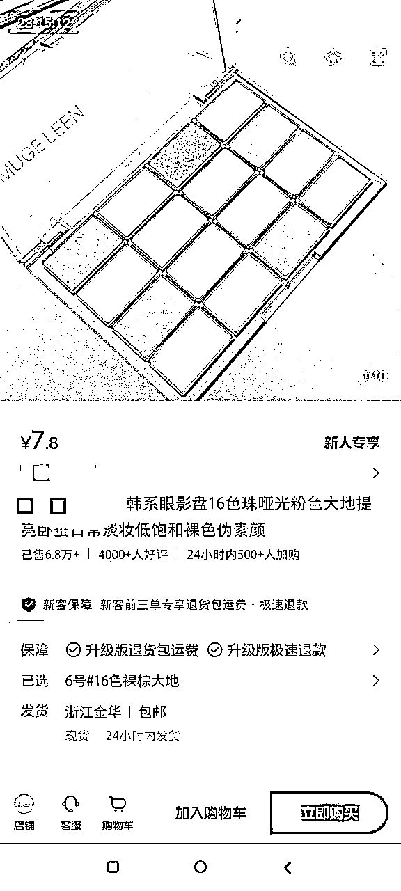
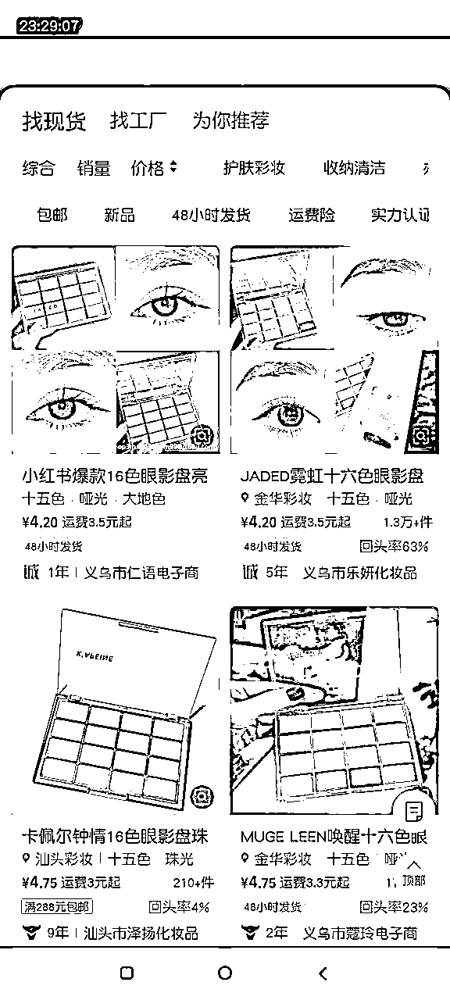

来源：https://7gepingpai.feishu.cn/docx/KzFCdmUjmoxcKZxja3jcghiLnrf
# 项目拆解
哈喽，各位生财的友友们好，我是七哥，我的拆解题目是:风向标拆解第 3 期-销量7w单的超低价十六色眼影盘 -七哥
请大家移步飞书查看完整拆解。
本篇拆解大纲如下
1. 前景概述
2. 产品形式
3. 变现分析
4. 注意事项
化妆品对于女人来说，这个是不可缺的东西。有一个高性价比的产品，会更有竞争力。



追求性价比是一时的，还是要抓高品质用户，高单价产品，品质又好，这样更利于盈利，更好巩固用户